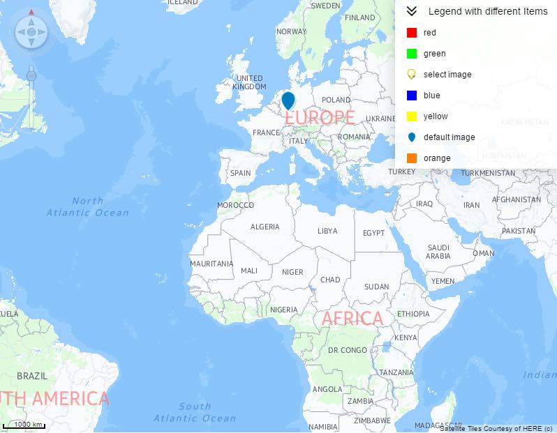
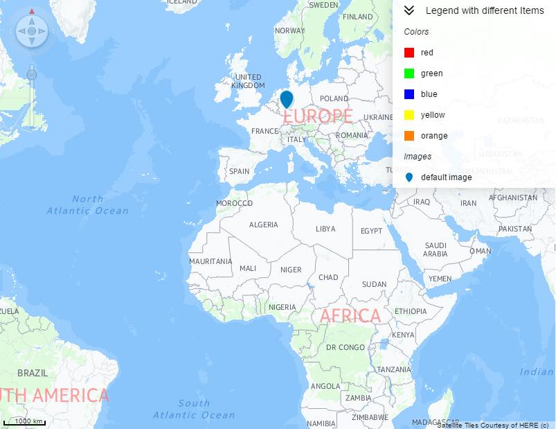

Visual Business UI5: Testing Legend
The aim:
To test the legend.
To test:
- Check that on initial load you can see a map with a legend.

- Click on "Load Legend" button and check that the result is the same as the initial load.
- Click on "Change Legend" button and check that the legend has a new format.

- Click on "Destroy" and check that the legend control is removed.It should not be visible